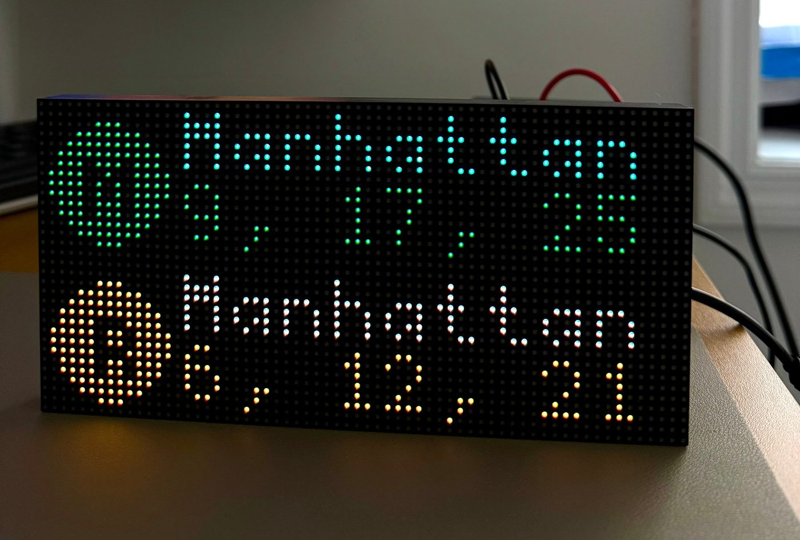
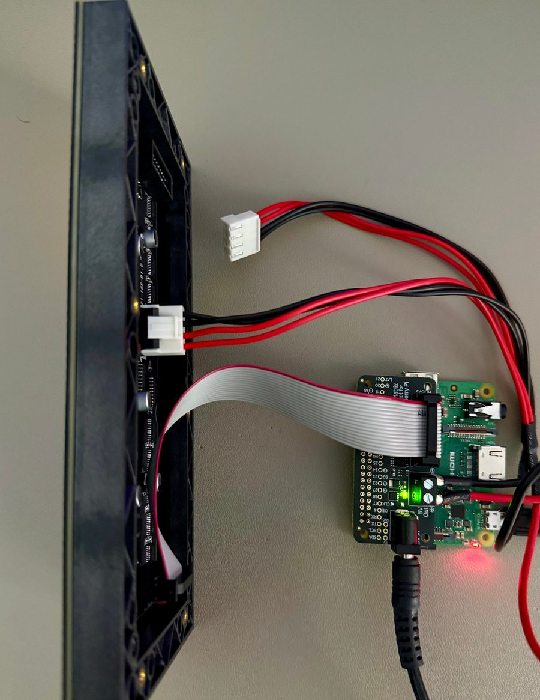

Subway countdown clock
A board of lights in my apartment that knows when my train is coming.
It shows the next R and M trains from 63 Dr–Rego Park toward Manhattan, and once a minute the arrivals slide away and the time slides in. On Friday evenings, Saturdays and holidays it also shows candle-lighting and havdalah times. It was my first hardware project: I'd never touched a Raspberry Pi before this.

